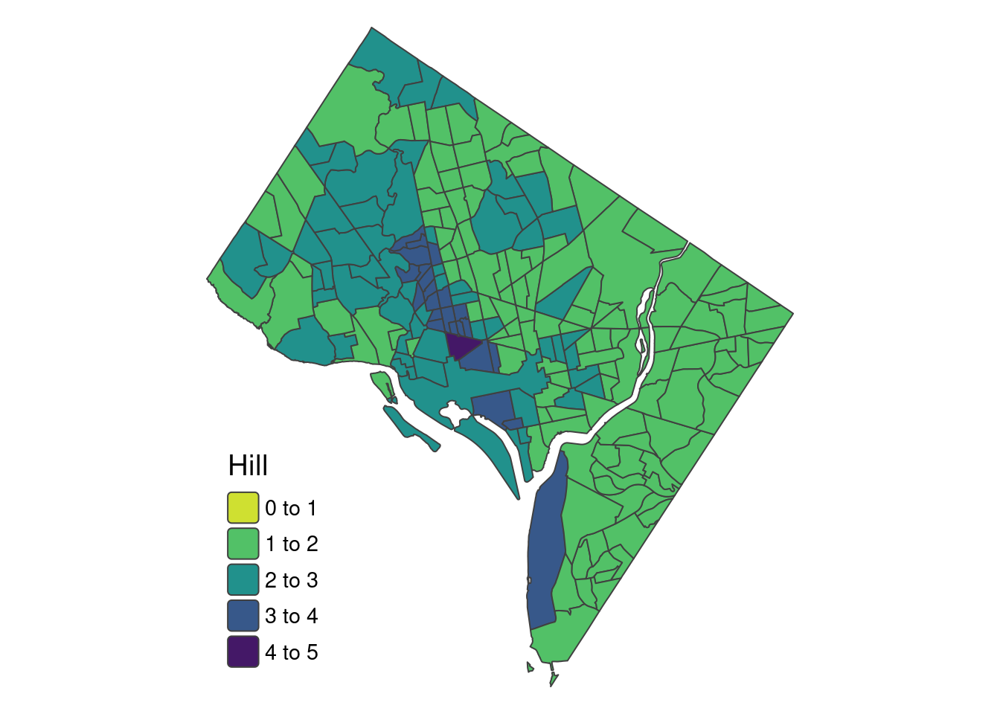
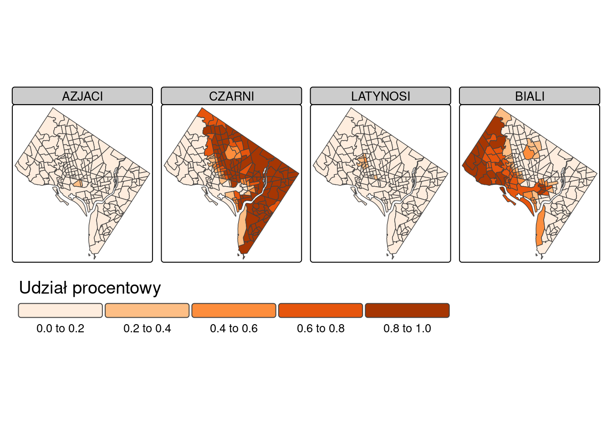
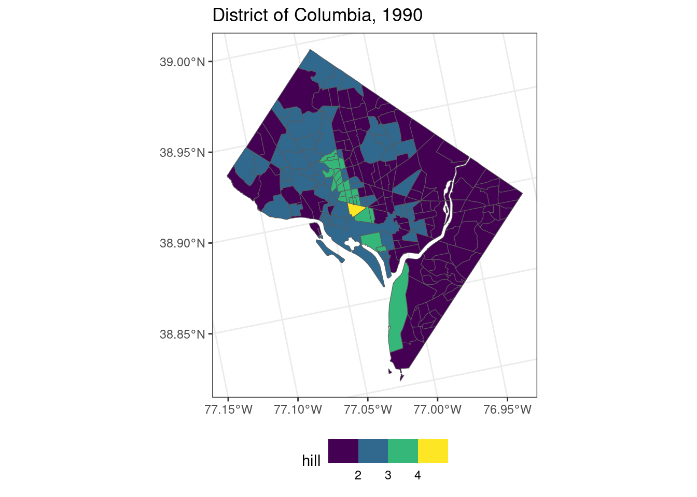
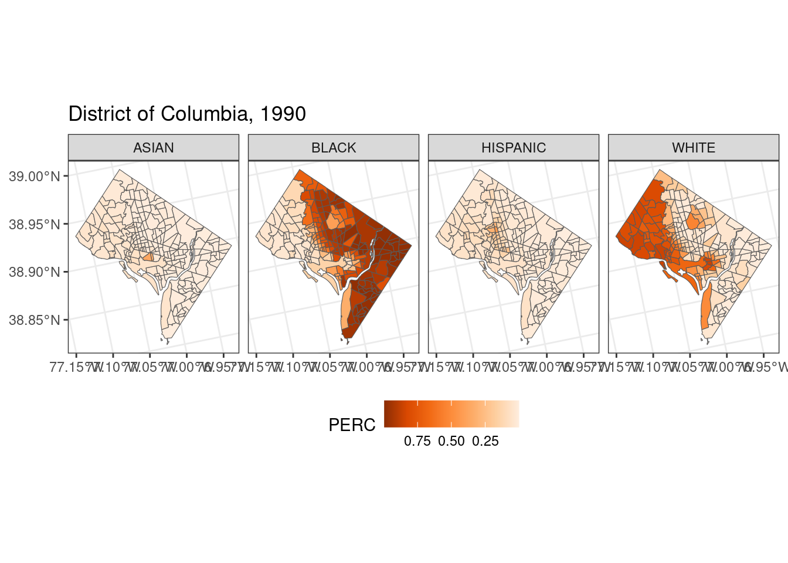

library(sf)
library(dplyr)11 Analiza rasowo-etnicznej struktury ludności na poziomie obszarów spisowych
11.1 Przykład
W przykładzie przeprowadzono analizę rasowo-etnicznej struktury ludności dla obszaru Distric of Columbia dla 1990 roku. W tym celu zostaną wykorzystane dane zagregowane do obszarów spisowych (ang. census tract) dla District of Columbia dla roku 1990 oraz 2020.
Analiza obejmuje kilka etapów:
- Etap 1. Standaryzacja danych między latami
- Etap 2. Obliczenie procentowego udziału grup rasowo-etnicznych w każdym obszarze spisowym
- Etap 3. Obliczenie miar zróżnicowania rasowo-etnicznego w każdym obszarze spisowym
Etap 1. Standaryzacja granic między rokiem 1990 a 2020
Granice obszarów spisowych zmieniały się pomiędzy latami. Aby analiza porównawcza między latami 1990 a 2020 była możliwa, dane z roku 1990 trzeba najpierw prztransformować do granic z 2020 roku. W tym celu zostanie wykorzystana metoda powierzchniowo-wagowa. Wyniki tego etapu zostaną zapisane w geopaczce dc_tracts_areal.gpkg.
list_race = c("WHITE", "BLACK", "ASIAN", "HISPANIC", "AM", "OTHER")library(sf)
dat90 = st_read("data/data_geo/dc_tracts_attr.gpkg", layer = "tract_attr_1990")Reading layer `tract_attr_1990' from data source
`/home/anna/DYDAKTYKA/analiza_wizualizacja_struktury_ludnosci/data/data_geo/dc_tracts_attr.gpkg'
using driver `GPKG'
Simple feature collection with 192 features and 11 fields
Geometry type: MULTIPOLYGON
Dimension: XY
Bounding box: xmin: 1610795 ymin: 1915125 xmax: 1629412 ymax: 1936100
Projected CRS: NAD83 / Conus Albersdat20 = st_read("data/data_geo/dc_tracts_attr.gpkg", layer = "tract_attr_2020")Reading layer `tract_attr_2020' from data source
`/home/anna/DYDAKTYKA/analiza_wizualizacja_struktury_ludnosci/data/data_geo/dc_tracts_attr.gpkg'
using driver `GPKG'
Simple feature collection with 206 features and 11 fields
Geometry type: MULTIPOLYGON
Dimension: XY
Bounding box: xmin: 1610830 ymin: 1915291 xmax: 1629412 ymax: 1936182
Projected CRS: NAD83 / Conus Albers#target units to granice z 2020 roku bez danych atrybutowych
target_units <- dat20[, c("GISJOIN")]
#source units to dane w granicach z 1990 roku
source_units <- dat90[, list_race]head(target_units)Simple feature collection with 6 features and 1 field
Geometry type: MULTIPOLYGON
Dimension: XY
Bounding box: xmin: 1614193 ymin: 1924396 xmax: 1617196 ymax: 1928676
Projected CRS: NAD83 / Conus Albers
GISJOIN geom
1 G1100010000101 MULTIPOLYGON (((1617191 192...
2 G1100010000102 MULTIPOLYGON (((1616328 192...
3 G1100010000201 MULTIPOLYGON (((1614894 192...
4 G1100010000202 MULTIPOLYGON (((1615456 192...
5 G1100010000300 MULTIPOLYGON (((1615387 192...
6 G1100010000400 MULTIPOLYGON (((1615334 192...head(source_units)Simple feature collection with 6 features and 6 fields
Geometry type: MULTIPOLYGON
Dimension: XY
Bounding box: xmin: 1617393 ymin: 1922581 xmax: 1625141 ymax: 1932562
Projected CRS: NAD83 / Conus Albers
WHITE BLACK ASIAN HISPANIC AM OTHER geom
1 72 3774 7 19 4 7 MULTIPOLYGON (((1625141 192...
2 387 3369 34 179 10 34 MULTIPOLYGON (((1617911 193...
3 999 881 87 82 5 87 MULTIPOLYGON (((1620563 192...
4 884 998 54 116 9 54 MULTIPOLYGON (((1621221 192...
5 2077 3523 71 170 25 71 MULTIPOLYGON (((1619819 193...
6 73 3143 17 20 10 17 MULTIPOLYGON (((1621529 193...Do przeliczenia danych z wykorzystaniem metody powierzchniowo-wagowej wykorzystamy funkcję st_interpolate_aw() z pakietu sf. Funkcja ta wymaga podania:
- obiektu klasy sf zawierającego dane, które chcemy przeliczyć (source_units),
- obiektu klasy sf zawierającego zestaw granic, do którego mają zostać przeliczone atrybuty (target_units)
W przypadku danych dotyczących liczby ludności należy podać argument extensive = TRUE. Argument keep_NA = TRUE oznacza, że zostaną zachowane wszystkie poligony z obiektu target_units (także te z brakiem wartości danych).
library(sf)
result90_20 = st_interpolate_aw(source_units, target_units, extensive = TRUE, keep_NA = TRUE, na.rm = TRUE)Warning in st_interpolate_aw.sf(source_units, target_units, extensive = TRUE, :
st_interpolate_aw assumes attributes are constant or uniform over areas of xObiekt result90_20 zawiera dane z roku 1990 przeliczone do granic z roku 2020. Funkcja
st_interpolate_aw()z pakietusfzwraca wynik w postaci obiektu klasysf.
head(result90_20)Simple feature collection with 6 features and 6 fields
Attribute-geometry relationships: aggregate (6)
Geometry type: MULTIPOLYGON
Dimension: XY
Bounding box: xmin: 1614193 ymin: 1924396 xmax: 1617196 ymax: 1928676
Projected CRS: NAD83 / Conus Albers
WHITE BLACK ASIAN HISPANIC AM OTHER
1 454.5016 16.09886 15.94307 25.56702 0.3377234 15.94307
2 3702.1012 130.23859 130.96536 209.30051 2.9178326 130.96536
3 2811.2740 353.45503 301.79514 257.49572 6.8150418 301.79514
4 3108.5839 74.83404 126.18505 178.01845 5.8030923 126.18505
5 5131.9774 193.13742 216.40894 296.51183 8.1870299 216.40894
6 1169.7487 53.64554 79.48757 124.16312 4.8734767 79.48757
geometry
1 MULTIPOLYGON (((1617191 192...
2 MULTIPOLYGON (((1616328 192...
3 MULTIPOLYGON (((1614894 192...
4 MULTIPOLYGON (((1615456 192...
5 MULTIPOLYGON (((1615387 192...
6 MULTIPOLYGON (((1615334 192...W kolejnym etapie ponownie do obiektu wynikowego result90_20 przypiszemy identyfikator GISJOIN dla obszarów spisowych. Uwaga! Obiekt result90_20 to granice z 2020 roku, dlatego należy przypisać pole GISJOIN z warstwy dat20
result90_20$GISJOIN = dat20$GISJOINW kolejnym etapie ponownie dla każdego obszaru spisowego wyliczymy liczbę ludności
result90_20$POP = rowSums(result90_20[,list_race, drop = TRUE], na.rm = TRUE)result90_20 = result90_20[, c("GISJOIN", list_race, "POP")]Zapisanie danych atrybutowych z 1990 roku w granicach z 2020 roku (przy wykonywaniu analizy dla innego roku podać nazwę layer = tract_areal_[rok])
st_write(result90_20, "data/data_geo/dc_tract_areal.gpkg", layer = "tract_areal_1990", append = TRUE)Dodanie danych z 2020 roku
st_write(dat20, "data/data_geo/dc_tract_areal.gpkg", layer = "tract_areal_2020", append = TRUE)Etap 2. Udział procentowy grup rasowo-etnicznych w każdym obszarze spisowym
Dalsza część analizy zostanie wykonana używając danych zapisanych w pliku data_geo/dc_tract_areal.gpkg. Są to dane z 1990 roku na poziomie obszarów spisowych “przeliczone” do granic z roku 2020.
library(sf)
list_race <- c("WHITE", "BLACK", "ASIAN", "HISPANIC", "AM", "OTHER")
dat_ct = st_read("data/data_geo/dc_tract_areal.gpkg", layer = "tract_areal_1990")Reading layer `tract_areal_1990' from data source
`/home/anna/DYDAKTYKA/analiza_wizualizacja_struktury_ludnosci/data/data_geo/dc_tract_areal.gpkg'
using driver `GPKG'
Simple feature collection with 206 features and 8 fields
Geometry type: MULTIPOLYGON
Dimension: XY
Bounding box: xmin: 1610830 ymin: 1915291 xmax: 1629412 ymax: 1936182
Projected CRS: NAD83 / Conus Albers#obliczenie odsetka ras dla poszczegolnych obszarow spisowych (dane wejsciowe do obliczenia entropii)
perc_ct <- dat_ct[,list_race]/dat_ct$POP
perc_ct$geometry<-NULLEtap 3. Miary zróżnicowania rasowo-etnicznego
#proportions - wektor zawierający odsetek poszczególnych ras w ogólnej liczbie ludności (wartości od 0 do 1)
#base - podstawa logarytmu, domyslnie exp(1) oznacza obliczenie logarytmu naturalnego
entropy_fnc = function(proportions, base = exp(1)) {
entr = -sum(ifelse(proportions > 0, proportions * log(proportions, base = base), 0))
return(entr)
}#obliczenie entopii dla każdego obszaru spisowego
ent <- apply(perc_ct, 1, entropy_fnc)#obliczenie entopii standaryzowanej dla każdego obszaru spisowego
estd <- ent/log(6)#obliczenie liczby Hilla
hill <- exp(1)^ent11.2 Wizualizacja wyników z pakietem tmap
#stworzenie ramki danych z udzialem procentowym i miarami zroznicowania
out_ct = data.frame(perc_ct, ent, estd, hill)Przekształcenie obiektu out_ct na obiekt przestrzenny
out_ct = cbind(dat_ct[, 1], out_ct)Zapisanie wyników
st_write(out_ct, "data/data_geo/dc_results.gpkg", layer = "out_ct_1990")11.2.1 Miary zróżnicowania rasowo-etnicznego
library(tmap)
#w zaleznosci od wersji tmap yl_or_br lub YlOrBr, lub oranges vs. Oranges
# argument breaks pozwala na ustawienie zakresu przedzialow
hill_map <- tm_shape(out_ct) +
tm_polygons(fill = "hill",
fill.scale = tm_scale(values = "-viridis", breaks = c(0,1,2,3,4,5)),
fill.legend = tm_legend(title = "Hill", frame = FALSE, position = tm_pos_in("left", "bottom"))) +
tm_layout(legend.text.size = 0.9,
legend.title.size=1.2,
frame = FALSE)
hill_map
tmap_save(hill_map, "results/dc_hill1990.svg")Map saved to /home/anna/DYDAKTYKA/analiza_wizualizacja_struktury_ludnosci/results/dc_hill1990.svgSize: 6.601681 by 7.422352 inches11.2.2 Rozmieszczenie grup rasowo-etnicznych
Obiekt out_ct zostanie przekształcony do formatu “długiego”, a następnie przy użyciu argumentu tm_facets_wrap() zostaną utworzone mapy pokazujące procentowy udział białych, czarnych, Azjatów oraz Latynosów. Mapy zostaną także zapisane do pliku o rozszerzeniu .svg.
library(tidyverse)
race_data <- out_ct %>%
select(c(WHITE, BLACK, ASIAN, HISPANIC)) %>%
pivot_longer(cols = c(WHITE, BLACK, ASIAN, HISPANIC),
names_to = "RACE",
values_to = "PERC")race_maps <- tm_shape(race_data ) +
tm_polygons(fill = "PERC",
fill.scale = tm_scale(values = "oranges"),
fill.legend = tm_legend(title = "Udział procentowy", orientation = "landscape", frame = FALSE, position = tm_pos_out("center", "bottom"))) +
tm_facets_wrap(by = "RACE", nrow = 1) +
tm_layout(legend.text.size = 0.8,
legend.title.size=1.2,
panel.labels = c("AZJACI", "CZARNI", "LATYNOSI", "BIALI"))
race_maps
tmap_save(race_maps, "results/dc_race1990.svg")Wykonaj mapy zróżnicowania rasowo-etnicznego oraz rozmieszczenia grup rasowo-etnicznych dla roku 2020.
11.3 Wizualizacja wyników z pakietem ggplot2
library(ggplot2)
ggplot(data = out_ct) +
geom_sf(aes(fill = hill)) +
scale_fill_binned(type = "viridis") +
labs(title = "District of Columbia, 1990") +
theme_bw() +
theme(legend.position="bottom")
library(ggplot2)
ggplot(data = race_data) +
geom_sf(aes(fill = PERC)) +
facet_wrap(~RACE, nrow = 1) +
scale_fill_distiller(palette = "Oranges", trans = "reverse") +
labs(title = "District of Columbia, 1990") +
theme_bw() +
theme(legend.position="bottom")